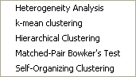
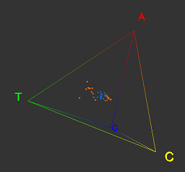
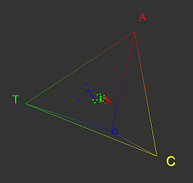
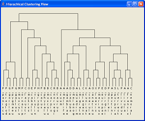
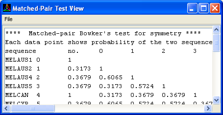

A range of statistical and visual analysis tools are provided in SeqVis to help determining the extend of compositional heterogeneity.


Heterogeneity Analysis
In this analysis, all point is assigned a colour to indicate how far is it from the centroid of all points. Points closest to the centroid are coloured in blue while, while points furthest
away from the centroid coloured in red.

k-mean clustering
This algorithm divide all the points into k clusters. User will be prompted for a value
of k.

Hierarchical Clustering
Euclidean distance between each point is measured, then clustered hierarchically. An average-linked
method is used.

Matched-Pair Test
Using Bowker's test for symmetry, a probability that two sequences are homogeneous is measured for each pair of sequences.
Self-Organizing Clustering (SOC)
An improved version of k-mean clustering, where we do not have to know the number of cluster in advance. For deatilas of SOC, please refer to Amano et al. (2003)
Amano, K., et al (2003) Self-Organizing Clustering: A novel non-hierarchical method for clustering large amount of DNA sequences. Genome Informatics, 14, 575-576